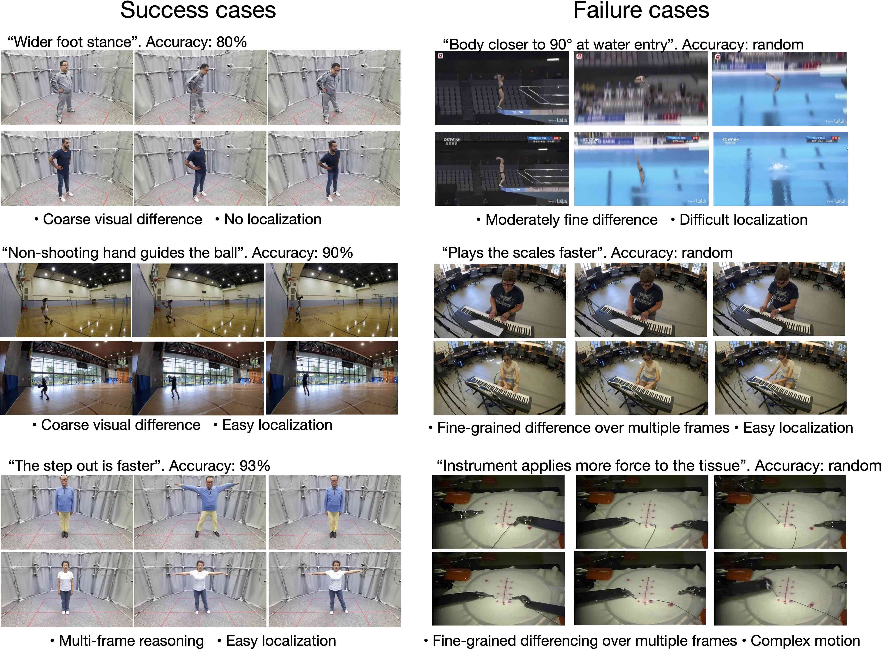
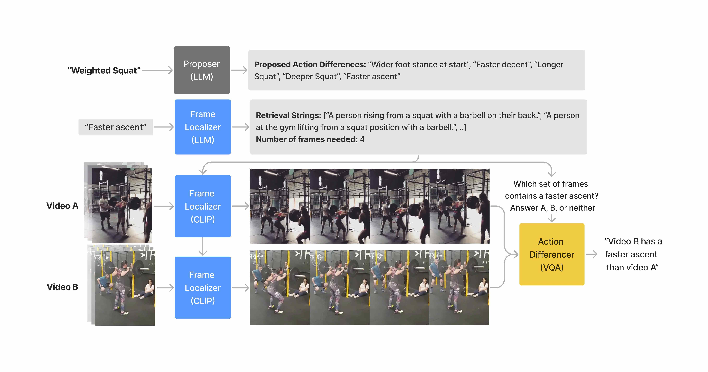

New task: Video Action Differencing (VidDiff)
Video Action differencing compares how an action is performed between two videos. We have ‘closed’ and ‘open’ evaluation settings. Here is the open setting:
For this open evaluation, the input contains two videos, along with an action description string like "deadlift". The task requires (1) generating differences in natural language like "feet stance is wider" and "faster speed", and then (2) also predicting whether the statement is more true in video 'a' or 'b'. Models are allowed to predict no more than \( n_{\text{diff}} \) differences.
The closed evaluation is the same, except the difference strings (like "faster speed") are given as input. So the models only need to predict 'a' or 'b' for each given difference. This is an easier task that focuses on video understanding.
Why is it interesting to compare action performance between videos?
- Applications: Comparison is common for learning or evaluating skills. For example a novice weightlifter learning a barbell squat might watch instructional videos of an expert doing the motion, and identify differences with their own performance. But why natural language? Because in coaching, feedback is often provided in natural language. Language is more interpretable than other formats, like human keypoint visualizations.
- Video understanding: In computer vision, comparison enables video understanding tasks that are too difficult to express without comparison. For example, a person watching a video of a soccer kick may struggle to describe the ball's speed precisely using natural language, relying instead on broad categories like 'low,' 'medium,' and 'high.' However, when comparing two videos, it's much easier to perceive and communicate which kick was harder.
What makes Video Action Differencing hard? We think there's two main things:
- Localization of sub-actions: finding differences requires finding the sub-action frames where the differences might occur, and aligning those frames between the two videos
- Fine-grained visual understanding: the ability to perceive subtle visual differences in motions.
The VidDiffBench benchmark
Since VidDiff is a new task, we also release the 🤗 VidDiffBench Benchmark.- Real-world & diverse actions: the actions are important to real skill learning, and come from a range of different activities: fitness exercises (HuMMann), ballsports (Ego-Exo4D"), music (also Ego-Exo4D"), diving ( FineDiving), and Surgery (JIGSAWs). There's a range in how complex the actions are, and how consistent the video backgrounds are.
- Skill-relevant differences: each action has a taxonomy of possible differences that are important to skill-learning, informed by domain expertise. These differences tend to require fine-grained motion details.
- Human-generated difference annotations: 4,469 difference annotations for 549 video pairs (~8 differences per video pair). Annotation time per video pair is ~3 minutes.
- Localization timestamp annotations: frame-level annotations of the sub-actions and differences. This enables evaluating localization quality of models, which can help future model development.
- Challenges existing models: highlights major gaps in video understanding beyond single-frame or single-video analysis.
Explore the benchmark here. (The viewer doesn't support full videos, so it only shows the thumbnail.)
Evaluating LMMs on VidDiffBench
SOTA large multimodal models (LMMs) struggle at Video Action Differencing.Quantitative results:
First is closed evaluation accuracy, where 50% is random, and gray shading indicates better-than-random performance with statistical significance:
All LMMs perform only slightly better than random on the easy split, showing lots of space for improvement. Gemini, which has advertised their video understanding results more than other frontier models, has the strongest performance. The open-source LLaVA-Video is competitve with closed models, while QwenVL-2 underperforms (possibly due to instruction following issues).
In open evaluation, the metric is recall@N, so worst-case performance is zero:
Here, the LMMs must identify the important differences, which relies on prior knowledge about actions. Compared to the closed setting, GPT and Claude perform better, Gemini performs relatively worse, and the open-source models have the lowest performance.
Qualitative results:
We looked at 'success cases' to understand when LMMs can do VidDiff in the closed setting. Since each difference appears times over different video pairs, we can compute the 'difference accuracy'. The image below shows 'success cases' as differences where GPT-4o have more than 80% accuracy, and 'failure cases' where accuracy is closer to random.

The 'success case' differences tend to have very easy localization and coarse grained visual differences. Any difference that had harder localization or fine-grained differences proved to be challenging.
The VidDiff method
Finally, we propose the VidDiff method, a zero-shot agentic workflow (or compound system). The decomposes the differencing task into logical steps, and leverages strong zero-shot models for each step.  The stages in open mode are:- Difference proposer: takes the action description string like "deadlift" or "practice soccer kick", and uses an LLM to propose candidate difference strings.
- Frame localizer: does temporal segmentation of the sub-actions that make up the action. It uses an LLM to propose the names of the sub-actions, uses an LLM to generate retrival strings for each sub-action, and then compares those strings to frames using CLIP. Finally it uses an LLM to link sub-actions to candidate differences.
- Action differencer: we now have candidate differences and their corresponding frames in both videos. So we now form a VQA query for a VLM (we use GPT-4o): we pass the localized frames to the VLM and ask whether the difference applies more to video A, video B, or neither.
Overall this method is structured to localize the key parts of the video where differences are possible, which should make visual comparison with the VLM easier (the fine-grain understanding part). The results are in the tables in the previous section as "VidDiff (ours)". The results outperform GPT-4o, which is the VLM backbone that we used, and this shows the value of our staged approach. It had the best overall performance in open eval, and second-best in closed eval.
Related Links
Only a few prior works do video comparison. VideoDiff compares how actions are performed, but the output is a visual annotation (instead of language), and there are more constraints on camer angle consistency. Nagarajan and Torresani compare instructional videos, focusing on differences in action steps, rather than how the action is performed. Doughty et al use video comparison as a sparse training signal for action quality assessment.Image comparison is more established: Jhamtani et al compared nearly identical images with few object differences, and Park et al extended this to varying objects and camera angles. Zero shot captioning VLMs have considered image comparison as early as the Flamingo paper. More recently, VisDiff extends the idea to comparing sets of images.
Many works address skills feedback on single videos without video comparison, including PoseTutor for yoga and Parmar et al for weightlifting. Ego-Exo4d provides expert commentary, which is promising for instructional feedback systems. Action quality assessment is also a relevant task, since it focuses on assessing movement quality.
Citation
@article{burgess2025video,
title={Video Action Differencing},
author={Burgess, James and Wang, Xiaohan and Zhang, Yuhui and Rau, Anita and Lozano, Alejandro and Dunlap, Lisa and Darrell, Trevor and Yeung-Levy, Serena},
journal={arXiv preprint arXiv:2503.07860},
year={2025}
}